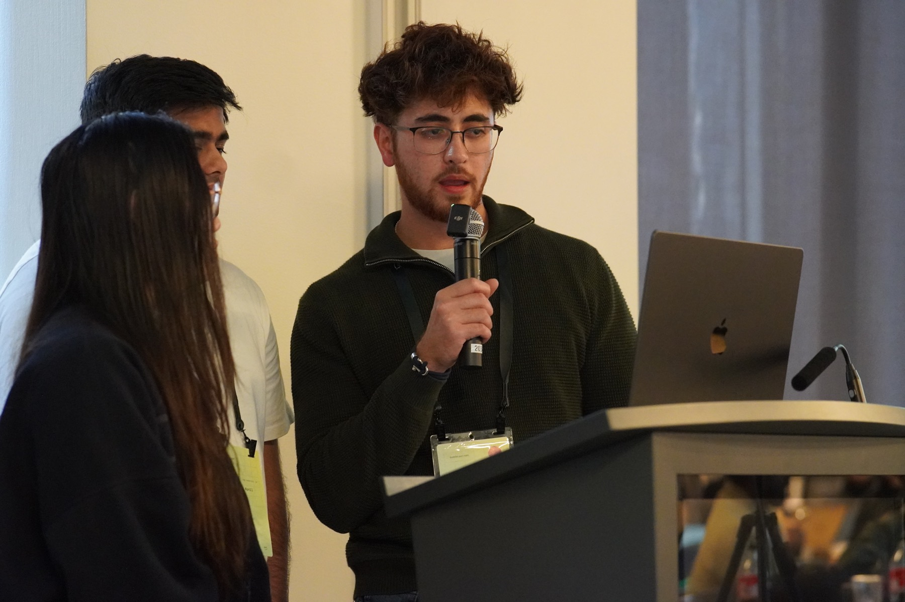
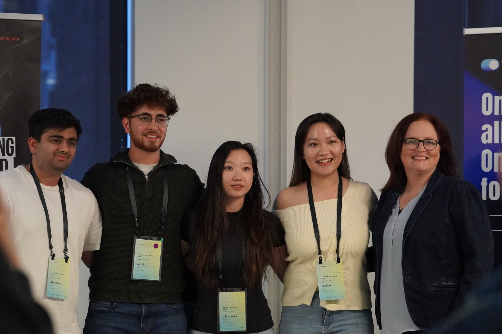
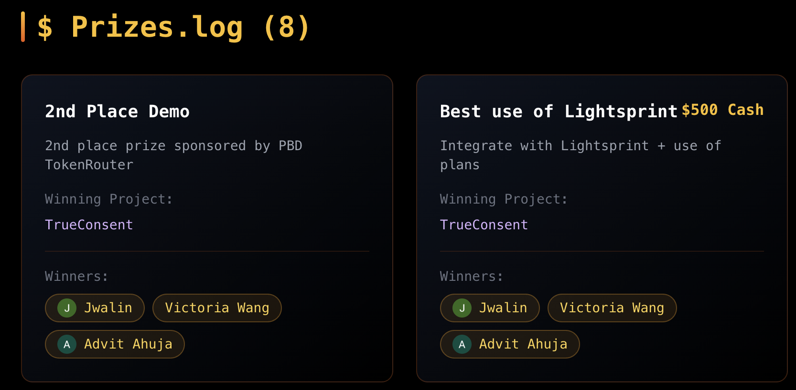

Build YC's Next Unicorn — Agent Hack Day
Build YC's Next Unicorn Hack Day — 1,168 participants, 44 projects submitted, 2nd place awarded 🏆. Hosted at the AWS Builder Loft on Market Street in San Francisco, it was a full day of going from idea to live demo in front of a panel of YC judges.
We built TrueConsent, an AI platform that files medical appeals. The opportunity is an arbitrage on inattention: insurers deny claims at scale, most of those denials collapse the moment someone pushes back — and almost nobody pushes back. The numbers are stark.
The hard part was never the fix — it's that almost no one shows up to claim what's owed. TrueConsent shows up.

The Pivot
Why is the team name TrueConsent and not TrueAppeals? Initially we submitted our team name because we were making an AI medical consent form scanner — something that would highlight red flags before you sign. But when we had almost finished, we spoke to some YC panelists and they helped us realize our flaw: if you're in dire need of surgery, are you really going to change hospitals when you're in urgent care? No.
This is where we had to make a crucial decision and pivot. Pivoting is how we came up with the winning idea — it came from taking advice and genuinely understanding real-world situations.

Speed
We leveraged our tools — including Lightsprint, one of the hackathon sponsors — which let us go from idea to MVP within the tight time constraints and adapt fast — leaning on it that hard also earned us the Best Use of Lightsprint prize. So much so that Victoria built a completely different submission for us in an entirely different sector. Why? Because for small projects, idea to prototype is catching up to the rate at which we can think.
Before we started, Kuanze Ma — who had won two hackathons in two days — gave a short presentation on how to win one. Four things judges look for:
- Usefulness
- Execution
- Leverage
- Clarity
Aim to solve one problem, and make it realistic to complete within the time frame.

2nd place was a great achievement, and it proved to us that my team and I — all coming from CS backgrounds — are at an advantage when it comes to picking up new technologies and competing in a welcoming yet competitive environment. We all had so much fun, and from the event Adam Chan set up, everyone walked away with new knowledge and skills no matter what level they walked in at.
Demoing live in front of everyone — including the panel of YC judges — was a phenomenal opportunity. They believed in our idea, and so do we.
Medical appeals are skewed for you to lose.
Special Thanks
A huge thank you to the HackerSquad team and Adam Chan for organizing and running the event — bringing 1,168 builders into one room and making it the welcoming, high-energy day it was.